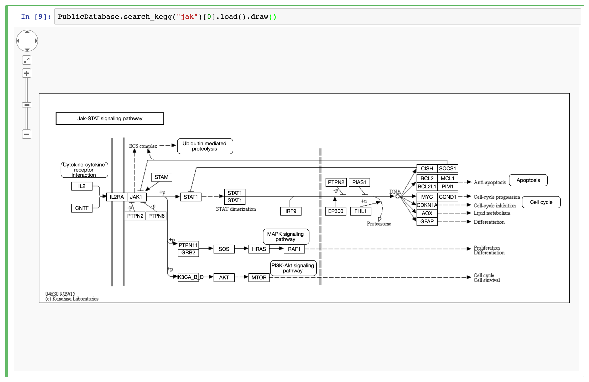

PyPathway
integrated Python toolkit for pathway based analysis


Installation
General requirement
Python version: >= 3.5
Windows
-
The Visual C++ 2015 Build Tools is required to compile c extensions.
-
numpy,scipyandstaticmodels(anaconda is recommend)
Unix / Linux
- gcc or clang compiler
Sources
- install via pypi
pip install pypathway
- install from the source
git clone https://github.com/iseekwonderful/PyPathway.git
cd PyPathway
python setup.py install
Features
- Public databases APIs:
STRING,BioGRID,KEGG,ReactomeandWikiPathway - Functional set based and network based enrichment analysis algorithms implemented:
ORA,GSEAandSPIA - Performance optimize for denovo enrichment algorithm
MAGIandHotnet2. - Network propagation random walk, RWR and heat kernel
- Interactive visualization for pathway, graph and analysis result.
-
Web page exportation for results.
-
Integrated with pandas, networkx and numpy. Most of the methods accept both text file and data structure from these packages
- Dynamic visualization for IPython notebook.
- Most classes implement
__repr__method for interactive environment.
Network process
Intuitive APIs for querying and retrieval interaction network from public database. The return object are stored in networkx.Graph object.
Support databases
KEGGReactomeWikiPathwaySTRINGBioGRID
Search
from pypathway import PublicDatabase
kg = PublicDatabase.search_kegg('CD4')
wp = PublicDatabase.search_wp('CD4')
rt = PublicDatabase.search_reactome('CD4')
Load
pathway = r[0].load()
Plot
pathway.draw()

IPython notebook examples
Enrichment Analysis
Support methods
- ORA
- GSEA
- Network enrichment (SPIA and Enrichment)
- denovo enrichment (MAGI and Hotnet2)
Implementation / Interface
- Staticmethod
run()for the starting of the analysis
r = SPIA.run(all=c.background, de=c.deg, organism='hsa')
table,plot()andgraph()method for the presentation of the analysis
res.table

res.plot()

res.graph()

IPython examples
Modeling
- the Python Interface and optimize for
MAGI - several c extension for `Hotnet permutation performance
Propagation
Implemented algorithms
- Random walk
random_walk(G, h)
- Random walk with restart
random_walk_with_restart(G, h, rp=0.7, n=-1)
- Heat kernel
diffusion_kernel(G, h, rp=0.8, n=100)
detail

image source: Network propagation: a universal amplifier of genetic associations
IPython notebook examples
Utility and Performance
- The Id converter
- GMT file manager
- network and expression data sets.
- numpy implementation of SPIA
- node swap c extension for Hotnet2
- multi-threading for MAGI
Interactive Visualization
The interactive visualization for IPython notebook
Feature
__repr__Implemented for most classes- dynamic visualization for networkx.Graph instance
- visualizer for pathway object
- visualizer for Gene ontology DAG.